面向安全关键自主系统的基于 AI 的媒体功能安全与可靠性验证
论文针对多媒体 SoC 中存储器软错误对视频/图像质量与下游 AI 推理精度的影响缺乏系统评估手段的问题，提出一套基于 SystemC 与 OpenVINO 的故障注入与媒体质量分析验证框架。方法上以可综合 RTL 的 Video/JPEG Encoder 为 DUT，对其内部 SRAM/register file 行为模型随机注入瞬态位翻转，输出经 DL Streamer/GStreamer 流水线用 ResNet-50 分类、COCO Eval 目标检测（Yolo-V3）及 VMAF 等指标量化 SDC 与良性错误的差异。结果显示约 1300 次 JPEG 仿真中 3 幅图像被错误分类（cat 误判为 tiger），故障持续时间越长 SDC 越多，某 Media workload 出现约 5% 的 F1 精度下降。框架可按 memory instance 的错误敏感度推荐选择式 error detect/correct 结构，在满足 FIT 目标的同时降低面积开销。
多媒体硬件（Video/JPEG Encoder）中存储器软错误（SEU/MBU）对输出视频/图像质量以及下游机器视觉推理精度的影响此前 largely unexplored；需要一种能注入软错误并区分 SDC 与良性错误、量化其对人类观看质量与 AI 推理影响的验证方法，以支撑 ISO 26262/ASIL 相关的功能安全与可靠性论证，并帮助系统在达成 SoC FIT 目标的同时避免在全量检错/纠错硬件上浪费硅面积。
统计故障注入（Statistical Fault Injection）+ RTL 仿真：以可综合 RTL 的 Video/JPEG Encoder 为 DUT，对其内部 SRAM 阵列/register file 行为模型随机化注入位翻转（随机化 memory location、fault 起始时间、fault persistence time、翻转方向 0/1），聚焦数据通路瞬态故障而非控制逻辑；SystemC TLM 参考模型用于数据完整性比对；OpenVINO + DL Streamer（基于 GStreamer）构建媒体分析流水线，用 ResNet-50 做图像分类评分、COCO Eval 计算 Average Mean Precision/Recall/F1、Yolo-V3 做目标检测、VMAF 做视频质量评估；最后基于 memory profiling 与错误敏感度结果推荐面积优化的选择性 error detect/correct 结构。
JPEG 研究共约 1300 次仿真，其中 3 幅图像被使用 ResNet-50 的分析框架错误分类（如 cat 图像因软错误 SDC 被误判为 tiger）
fault persistence time 增加时 media hardware pipeline 内的 SDC 随之增加；memory bit cell 翻转到逻辑 '1' 比翻转到 '0' 的错误率更高
F1-score 结果显示某 Media workload 因软错误出现约 5% 的精度下降
SystemC + OpenVINO 自动化相比以往内部项目减少了专用测试内容创建与执行时间，并支持在 IP 级环境使用客户 workload，但论文未给出具体量化数字
论文指出软错误对机器视觉推理精度的影响是 largely unexplored 的方向，其区别于已有工作的点在于：将存储器软错误故障注入与下游 AI 推理指标（mAP、precision/recall、F1、分类准确率）及视频质量指标（VMAF）闭环关联，用 SystemC+OpenVINO 自动化框架区分 SDC 与良性错误，并按 memory instance 粒度的错误敏感度推荐选择性检错/纠错机制，而非部署全量 ECC/检错硬件，从而在满足 FIT 目标的同时降低面积开销。
相关度级别：high
命中能力域：2.5 功能安全与安全机制 | 2.6 Fault simulation/Z01X/TFMEA
理由：论文核心正是基于功能 stimulus（真实视频/图像流）的统计故障注入与 fault grading（SDC vs benign、按 memory instance 的 pass/fail 分布），并用下游 AI workload 量化错误影响，与团队 2.6 域'基于功能 stimulus/pattern 的 fault injection、fault grading、detectability 分析'直接对应；其按 memory instance 错误敏感度推荐选择性安全机制、以面积换覆盖率的思路，可支撑 2.5 域的安全机制设计与 FuSa TFMEA/FMEDA 论证。团队产品线（LPDDR/HBM4/UCie 等）同样关注存储事务中软错误的影响与安全机制面积/diagnostic coverage 权衡，方法可迁移。需注意论文注入对象是媒体 Encoder 的片上 SRAM/register file，且采用 RTL 仿真注入而非 Z01X 门级 fault simulation，与团队现有 Z01X 流程需做适配。
建议动作：深入精读并做内部分享
安全关键自主系统中基于AI的媒体功能安全与可靠性验证
Suresh Vasu Palanivel Guruvareddiar
摘要：得益于处理器算力、连接性与存储器技术的进步，近年来对视频处理芯片的需求不断上升。除了传统的视频娱乐应用之外，人工智能（AI）技术的爆发式增长还催生了多种机器视觉应用。如今，面向这些各类多媒体应用的片上系统（SoC）是由具有庞大存储器需求的硬件构成的复杂链条。设计中的功能安全与可靠性验证至关重要，若验证不当，可能给最终用户带来灾难性的后果。芯片中的软错误（尤其是在存储器事务期间发生的软错误）对最终用户体验以及机器视觉算法推理准确度的影响，在很大程度上仍是一个未被探索的领域。本文试图通过概述一种新颖的方法学和一种独特的验证框架来弥合这一空白，该框架能够注入软错误，并研究这些错误对视频/图像质量以及推理准确度的影响。利用该验证框架，我们研究了存储器中的软错误对JPEG编码器硬件的影响，并将研究扩展到视频编码硬件，其编码后的视频流既供人类观看，也用于机器视觉。对于人类观看，该框架既使用标准指标计算客观视频质量，也使用视频多方法评估融合（VMAF）计算主观质量指标。对于机器视觉，该框架执行包括目标检测、跟踪和分类在内的AI工作负载，并计算平均精度均值（mean average precision）、多目标跟踪器精度（multi-object tracker accuracy）以及分类准确率（classification accuracy）等各类指标。所提出的验证方法学利用了SystemC和OpenVINO的强大能力，在功能安全与可靠性验证方面提供了创新。
关键词- 视频、编码器、解码器、软错误、推理、故障注入
根据集成电路（IC）最终应用的不同，硬件设计需要满足不同级别的鲁棒性要求，以确保功能安全。按照 ISO 26262 规范定义的 ASIL 等标准，就是校准系统功能安全的一个例子 [6]。虽然有多种参数可能影响系统级鲁棒性，但本文将讨论影响硅硬件设计的可靠性的一个方面——即软错误。软错误是由高能粒子撞击逻辑或存储器而引发的瞬态错误，会造成单比特/事件翻转或多比特/事件翻转（SEU/MBU）。这些错误不同于永久性故障或硬错误，是可恢复的。
然而，并非所有软错误都会导致功能性错误。即使硬件没有任何可用的检测或纠正机制，全部软错误中也只有一部分会导致静默数据损坏（SDC），其余部分则不会影响系统输出 [5]。我们在视频硬件流水线中研究的正是这种行为：通过测量视频输出中的 SDC 与良性错误，及其对下游应用的影响。
量化片上系统（SoC）的 FIT（Failure In Time）率是确定系统可靠性的一个重要数据点。FIT 率取决于多种因素，例如微架构、电路行为、设计、工作负载以及处于使用条件下的时间。由系统中的微架构、电路组件和工作负载所决定的参数，通常被称为架构脆弱因子（AVF）[1]。设计中的逻辑结构，如存储器阵列、触发器、锁存器、缓冲器和寄存器，可能具有不同的 AVF 降额因子。将不同组件的错误率经适当的 AVF 缩放后求和，即可确定一个应用的错误容忍度。
本文所讨论的硬件是多媒体硬件，包括视频编码器和解码器。这类硬件通常包含专用逻辑以及密集的存储器，在流水线的各个阶段用作帧缓冲。从构造上讲，存储器阵列已被证明更容易受到由软错误引起的位翻转的影响，因此本研究目前聚焦于视频硬件内部的存储器损坏。这些硬件模块的输出可由诸如 CPU 核心 / 人工智能（AI）引擎 / 媒体应用等消费端进一步处理。
使用神经网络进行目标检测与分类，就是对图像/视频输出进行推理的一种此类应用。这正是本文为研究视频硬件中软错误相关故障的下游影响而选择的应用 [2]。
如下一节所述，我们采用简单、流行且精确的寄存器传输级（RTL）仿真技术，向媒体硬件中的存储器阵列注入故障。在流行的目标跟踪神经网络中，以精确率（precision）和召回率（recall）值衡量的视频质量，在来自编码器硬件的注入错误视频输出与基准真值（ground truth）之间进行了比较。所述验证框架的鲁棒性使我们能够在多种多媒体硬件、推理工作负载和神经网络（NN）模型上进行实验。本研究的结果可用于基于存储器剖析（memory profiling）和错误易感性，推荐合适的面积优化的错误检测机制。这使得系统设计人员能够达到规定的片上系统（SoC）FIT（Failure In Time）速率，同时不会在功能完备的错误检测或错误纠正硬件上浪费硅面积。
图1展示了集成电路（IC）/专用集成电路（ASIC）项目总时间中用于验证的百分比 [3]。根据Mentor Graphics团队所开展的案例研究与分析，在过去几年中，验证工作的复杂度显著提升，设计规模也增长了数倍。由于大量IP被集成到片上系统（SoC）中，验证工程师在日常调试中面临诸多挑战。
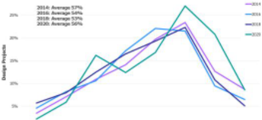
图2展示了验证工程师（平均而言）将时间花费在哪些方面 [3]。最新研究表明，在芯片开发过程中，验证工程师花在调试上的时间多于其他所有验证任务，例如测试规划、测试平台（testbench）开发、创建测试用例、运行仿真以及支持性工作。从验证与确认（verification and validation）工程师的经验来看，导致调试时间较多的原因之一是无法为流片后验证（Post Silicon Validation）创建测试内容，并且缺乏能够使测试内容保持灵活性的基础设施。
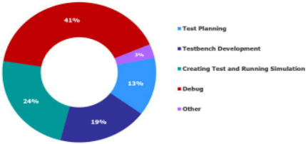
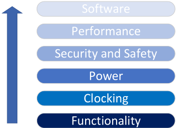
图3表明，验证复杂度从功能层面到软件层面逐步增加。信息安全与功能安全（Security and Safety）是最关键的验证之一，在竞争激烈的市场中决定着产品的成败。
SystemC [4] 是一个 C++ 类库，支持在软件环境中对硬件描述进行设计与仿真。SystemC 使设计人员能够使用同一种语言在所有抽象层次上进行设计与验证。SystemC 硬件模型位于软件环境之中。该模型可以随时在软件环境中进行正确性验证，这通常能够缩短仿真时间。其所引入的更高抽象层次也促进了设计复用。目前，SystemC 为高层次功能模型提供了一个有效的验证平台，因为它在软件环境中引入了时序。
图4展示了使用 SystemC 模型进行寄存器传输级（RTL）验证的传统方式。测试平台中的记分板（scoreboard）、检查器（checker）等组件通过事务级建模（TLM）端口与 SystemC 模型交互，以传递配置并拉取编码后的数据输出。数据收集完成后，会将其与 RTL 输出进行比较，以验证数据完整性。根据验证方法学的不同，SystemC 模型既可用于逐像素比较，也可用于逐帧比较。
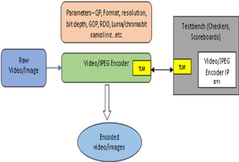
统计故障注入（Statistical Fault Injection）是一种众所周知的技术，用于研究系统中错误的影响 [9]。此处的被测设计（Design Under Test, DUT）是一个视频/JPEG 编码器模块的可综合 RTL 模型。该模块以 YUV 格式的原始视频/图像作为输入，并将其编码后作为输出：视频情况下为 AVC/HEVC 格式，图像情况下为 JPEG 格式。在实际用例场景中，这些视频/图像输出会被存储起来，供其他应用程序后续使用。RTL 模块内以 SRAM 阵列或寄存器堆形式存在的存储器是任何专用硬件的典型特征。这些存储器在 DUT 中同样被建模为行为模型，从而允许在存储器阵列内的期望位置注入位翻转。
所搭建的仿真与测试环境可对多个参数进行随机化，例如存储器位置、故障注入起始时间、故障持续时间以及位翻转性质（0 或 1）。本文聚焦于编码器硬件数据通路中的瞬态存储器故障，而非控制逻辑。这是因为控制通路的失效在本质上更具灾难性且不可恢复，因此无需进行质量分析。而另一方面，数据通路错误可能引发也可能不引发功能失效（SDC），因此必须通过质量分析来确定这些错误的影响 [11][12]。
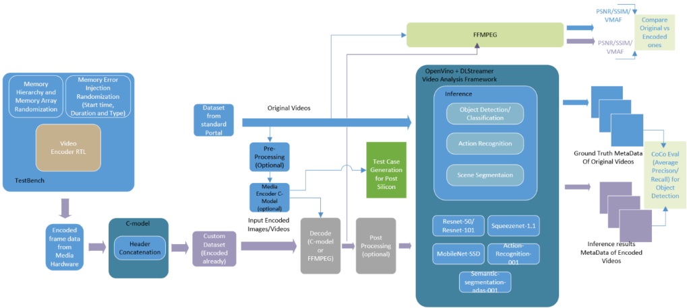
.
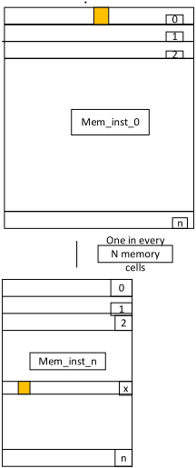
在 JPEG/视频分析中，该框架使用 OpenVino + DL Streamer [15]，分类分析由神经网络（NN）模型（即 Resnet-50）完成，目标检测准确度分析则由 Coco Eval 工具完成。OpenVino 是一个用于优化和部署 AI 推理的开源工具包。DL Streamer 是一个流媒体分析框架，基于 Gstreamer 多媒体框架，用于创建复杂的媒体分析流水线。借助 DL Streamer 创建所需的流水线，视频/图像通过同一流水线进行处理，并收集元数据。对于基于视频的目标检测，采用基于 COCO Eval 的方法进行目标检测分析 [17]。Coco 格式是一种特定的 JSON 结构，规定了图像数据集中标签和元数据的保存方式。在此过程中，元数据被转换为 Coco 格式，并使用 Coco Eval 工具对其进行分析；Coco Eval 工具通过对比真值（Ground Truth）元数据，提供平均精度均值（Average Mean Precision）和平均召回率均值（Average Mean Recall）数值。F1 分数是精确率（precision）与召回率（recall）的加权平均值。其取值范围为 0 到 1，其中 1 表示最高准确度。Coco eval 工具使用由原始视频生成的元数据细节，并将其与存储器故障注入后所生成视频的元数据进行比较。
对于基于 JPEG 图像的分类，采用 Resnet-50 等 NN 模型，通过将原始图像与存储器故障注入后生成的图像进行比较，即可得到分类分数。
示例 DL Streamer 流水线如下所示：
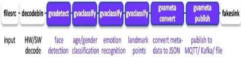
}] "objects": [ 1 "classification_layer_name:prob": { "confidence": .09943553805351257, "label": "assault rifle", "label_id": 413, "model": { "name": "MOBILENET V2" "detection": { "bounding_box": { "x_max": 0.6390969395301087, "x_min": 0.61303097459388, "y_max": 0.7760099530452977, "y_min": 0.7403974098229809 "confidence": 0.9960777759552002, "label": "car", "label_id": 2 }, "h": 38, "roi_type": "car", "w":50, "x": 1177, "y": 800 },
示例元数据如下所示：
F1 分数按以下方式计算：
Precision = TP/ (TP + FP)，其中 TP - True Positive（真阳性），FP - False Positive（假阳性）；Recall - TP/ (TP + FN)
F1 Score = (2 x (Precision x Recall)) / (Precision + Recall)
在关于软错误对视频影响的研究中，采用 Yolo-V3 NN 模型进行目标检测。
本节介绍本研究中使用的图像和视频数据，以及仿真和目标检测的结果。我们在视频/图像中随机选取的帧中注入错误，无论是否导致功能失效，均将其送入质量分析框架进行处理。下文以数值评分和最终输出视频/图像中肉眼可观察到的伪影两种形式对结果进行总结。
从流行的图像数据集中选取了四幅不同的输入图像。两项关键结果以图表形式呈现——第一张图展示了错误百分比与故障持续时间之间的关系——这证明了错误持续时间越短（包括位翻转为0和位翻转为1），失效率越低。接下来的两张图展示了仿真结果在各个存储器实例和故障持续时间区间上的散点图。这使我们能够洞察设计中哪些存储器实例比其他实例对错误更具容忍性。
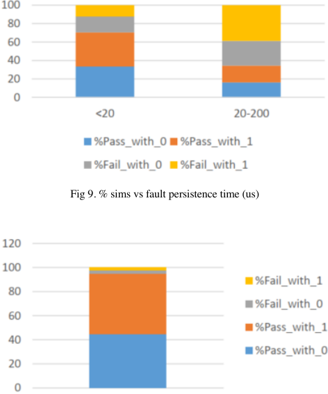
图11和图12所示的图表表明，随着故障持续时间的增加，媒体硬件流水线中的静默数据损坏（SDC）也随之增加。当存储器位单元翻转为逻辑高电平即'1'而非'0'时，错误率似乎也会增加。
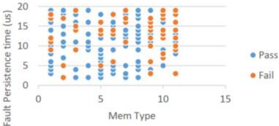
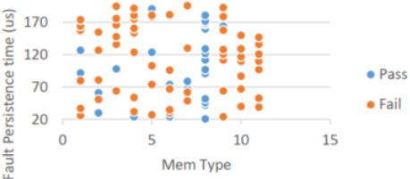
在大约1300次仿真中，有三幅结果图像被采用Resnet50神经网络（NN）模型进行图像分类的分析框架错误分类。在下方的图7中，由于所仿真的软错误SDC，推理框架将一幅猫的图像错误地分类为老虎。之所以出现错误推理，是由于与真值分类分数存在高度不匹配。这一点由图13所示的异常分类分数所表明，该分数显著高于以蓝色标记的真值。
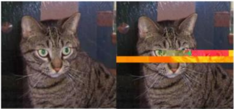
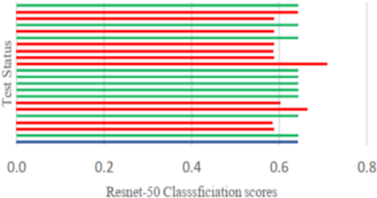
B. HEVC/AVC
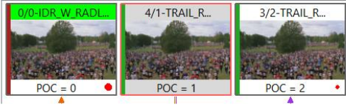
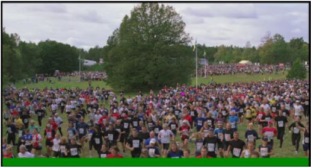
通过与原始crowdrun视频真值进行比较得到的平均召回率与精确率数据如下方图17所示。
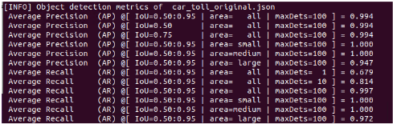
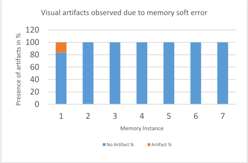
F1分数（F1-score）结果如下所示，其表明由于某一媒体工作负载（Media Workloads）中的软错误，准确率降低了约5%。
| 0 | 1 | 2 |
|---|---|---|
| Recall | Precision | F1-score |
| 0.972 | 0.947 | 0.95933715 |
| 0 | 1 | 2 |
基于SystemC + OpenVINO的媒体功能安全与可靠性验证，与内部以往项目所花费的时间相比，减少了特定内容创建的工作量。它在前期就有助于在IP级环境中使用客户工作负载进行验证。此外，基于媒体编码器System C模型（Media Encoder System C-models）+ OpenVINO的自动化，帮助利用神经网络模型来理解受特定存储器影响的功能特性。
故障注入是对错误建模并理解硬件容错能力或可靠性的最精确方法之一。采用除RTL模型之外的其他硬件架构模型也是一种常见做法。这样，在仍使用该分析框架的同时，可以大幅缩短设计中多个位的仿真时间。基于结果，可以为存储器提出选择性的错误检测/纠正结构。那些被发现最易受错误影响的存储器实例或类别可以被选中用于错误检测/纠正。这降低了这些方案所带来的总体面积开销。
基于SystemC + OpenVINO的神经网络（NN）模型用于视频功能安全验证是一种有效的方法学，它将有助于日常验证活动，减少测试内容创建的人工工作量，并通过自动化节省大量执行时间。该方法学将在设计开发阶段帮助准备所有测试内容、在IP级仿真中进行验证，并利用AI工具（即OPENVINO）的强大能力。